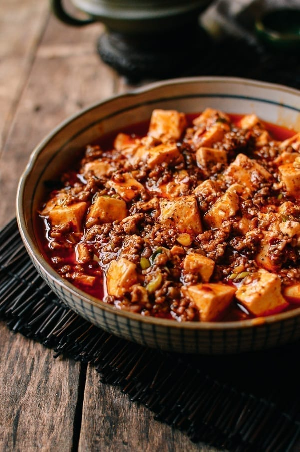

Mapo Tofu

Description
Mapo tofu is a spicy and savory dish from Sichuan
Ingredients
- Tofu
- Doubanjiang
- Garlic
- Ginger
- Vegetable Oil
Steps
- Cut the tofu in to cubes.
- Blanche the tofu.
- While blanching, bring vegetable oil to heat in a pan to medium high heat